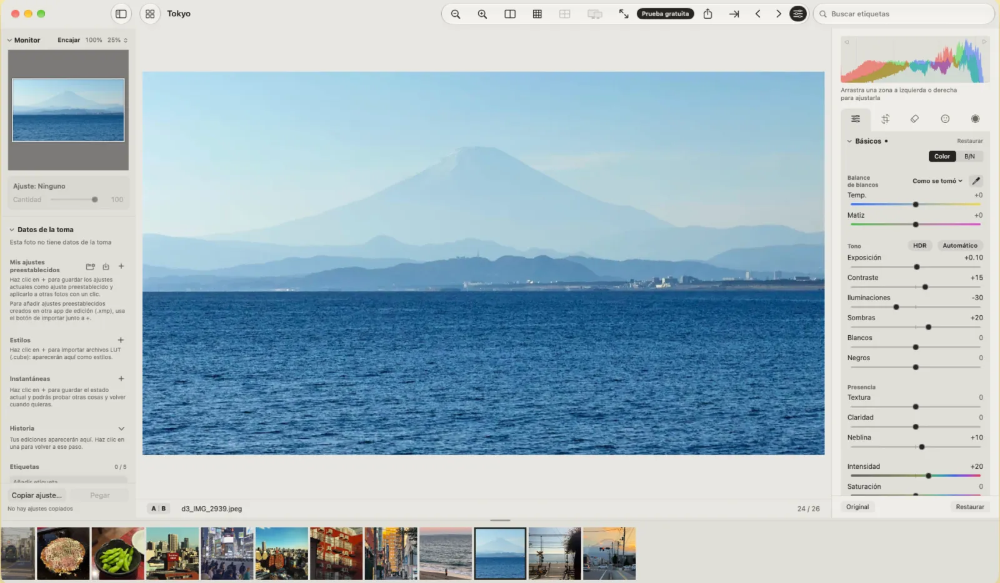

RAW
Los RAW se abren con el color y el brillo ajustados a la cámara que los tomó.

132 perfiles de cámara incluidos
Fujifilm, Sony, Canon, Nikon, Hasselblad, DJI y iPhone, cada uno ajustado en color y brillo.
Cámaras nuevas sin actualizar la app
Ajustes busca un paquete de perfiles nuevo, al momento o cada semana, y los nuevos perfiles se aplican a las fotos que abras después.
Modos que protegen las luces
Las fotos tomadas con la prioridad a tonos altos de Canon o con DR200/DR400 de Fujifilm se abren con el brillo que viste en la cámara.
Todos los formatos RAW habituales
CR3, CR2, NEF, ARW, RAF, RW2, ORF, DNG, 3FR, IIQ y más. En Mac, si macOS aún no lee una cámara muy nueva, Butter Edit edita el JPEG incrustado y te lo indica.
JPEG, HEIC y más, con las mismas herramientas
JPEG, HEIC/HIF, PNG, TIFF, WebP y AVIF tienen los mismos controles, máscaras y ajustes preestablecidos que el RAW.
Editor RAW rápido por carpetas
Descarga gratuita, con 30 días de prueba gratis de todas las funciones. Requiere macOS 26 o posterior. Windows 10 (64 bits) o posterior.